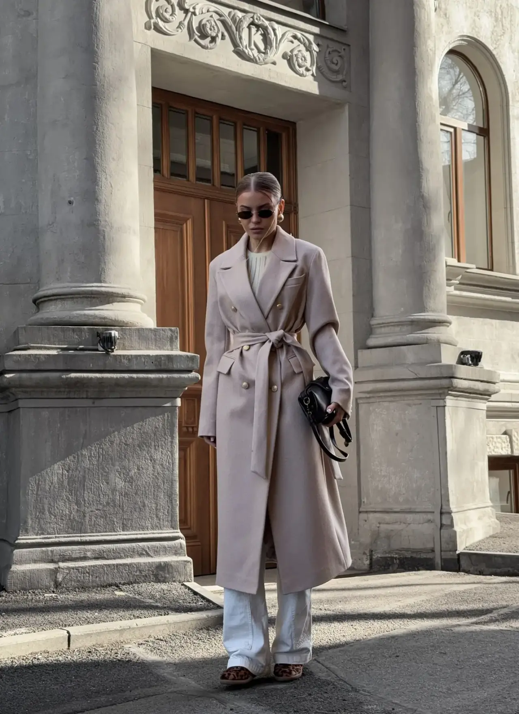

01 / Case studyTHE | WESHALKA · E-commerce
THE |
WESHALKA.
Коммерческий сайт бренда верхней одежды: собрали каталог, карточки моделей и спокойный маршрут от выбора силуэта до заказа.
- Роль
- Структура · дизайн · разработка
- Статус
- Commercial project · Completed
- Формат
- Адаптивный e-commerce сайт

ЗадачаПоказать характер
Показать характер
через форму.
Для бренда верхней одежды важны силуэт, фактура и ощущение спокойной уверенности. Сайт должен был передать этот характер и при этом быстро вести к конкретной модели.
СтруктураОт коллекции
От коллекции
к выбору.
Выстроили иерархию вокруг коллекций и сценариев выбора: каталог, фильтры, карточка товара, варианты цвета и размера. Корзина и заказ в Telegram остаются естественным продолжением просмотра.
Коммерческий маршрутЦельный опыт
Цельный опыт
на каждом экране.
Сайт объединяет онлайн-каталог и офлайн-шоурум THE | WESHALKA в Санкт-Петербурге: посетитель может изучить модели, уточнить детали и выбрать удобный способ связи с брендом.
Открыть theweshalka.ru